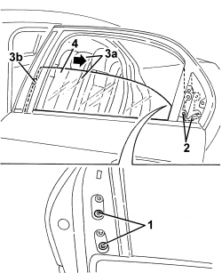

7010D15 REAR SIDE DOOR DESCENDING WINDOW GLASS (ONE), LEFT OR RIGHT - R.R
- Path
- Procedures > 70 FITTINGS > 7010 PASSENGER COMPARTMENT REAR SIDE DOORS > 7010D REAR SIDE DOOR WINDOW GLASSES > 7010D15 REAR SIDE DOOR DESCENDING WINDOW GLASS (ONE), LEFT OR RIGHT - R.R
- Kind
- repair procedure (removal / refitting; the operation number is the code)
- Applies to
- all engines; all production periods
- Interactive page
- https://sloeber94.github.io/elrnDB/#/939011175
Applies to: all engines; all production periods
 Removing
Removing
 Refitting
RefittingOp. 7010E62 REAR DOOR INNER REAR PANEL (ONE) LH OR RH - R R
Op. 7010E38 REAR SIDE DOOR INTERIOR HANDLE-R R
For vehicles with manually operated windows
Op. 7010E10 REAR SIDE DOOR INNER PANEL - R.R. OR REPLACE
1. Open the access cover to the descending glass retainer.
2. Provisionally connect the window raising handle to the control shaft (2a) or the window switch, then move the descending glass until the glass drive retainer (2b) is in the access position (as shown in the figure).
3. Disconnect the retainer (2b) from the glass (3a).

Applies to: all engines; all production periods
1. Undo the bolts fixing the rear channel lowering section of the glass.
2. Move the lowering section of the channel to the side.
3. Pull the glass (3a) carefully in the direction of the arrow and release the pad (3b) from the channel.
4. Extract the glass carefully from the outside of the door frame.
Applies to: all engines; all production periods

Applies to: all engines; all production periods
- If necessary, carry out:
Op. 7010D12 REAR SIDE DOOR DESCENDING WINDOW GLASS FASTENING ELEMENT (ONE), LEFT OR RIGHT - R.R.
Applies to: all engines; all production periods
Refitting
Removing- Check the condition of the glass and the sliding channels.
- If removed,
Op. 7010D12 REAR SIDE DOOR DESCENDING WINDOW GLASS FASTENING ELEMENT (ONE), LEFT OR RIGHT - R.R.
- Position the glass carefully in its housing and attach the pad in the channel.
- Lower the window until it fits into the drive retainer.
- Position the rear channel descending section in its housing and secure with bolts.
- Close the access cover to the descending glass drive retainer.
- Move the window to check its operation.
Op. 7010E10 REAR SIDE DOOR INNER PANEL - R.R. OR REPLACE
Op. 7010E38 REAR SIDE DOOR INTERIOR HANDLE-R R
Op. 7010E62 REAR DOOR INNER REAR PANEL (ONE) LH OR RH - R R
- Check that the dismantled parts are working.
Topics linked from this page (5)
- 7010D12 REAR SIDE DOOR DESCENDING WINDOW GLASS FASTENING ELEMENT (ONE), LEFT OR RIGHT - R.R.
- 7010D38 REAR SIDE DOOR MANUAL WINDOW OPENING MECHANISM HANDLE/RING NUT (ONE), LEFT OR RIGHT - R.R
- 7010E10 REAR SIDE DOOR INNER PANEL - R.R. OR REPLACE
- 7010E38 REAR SIDE DOOR INTERIOR HANDLE-R R
- 7010E62 REAR DOOR INNER REAR PANEL (ONE) LH OR RH - R R